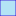

<!doctype html>
<html lang="en">
    <head>
        <meta charset="utf-8">
        <meta http-equiv="X-UA-Compatible" content="IE=edge">
        <meta name="viewport" content="initial-scale=1,user-scalable=no,maximum-scale=1,width=device-width">
        <meta name="mobile-web-app-capable" content="yes">
        <meta name="apple-mobile-web-app-capable" content="yes">
        <link rel="stylesheet" href="css/leaflet.css" /><link rel="stylesheet" href="http://maxcdn.bootstrapcdn.com/font-awesome/4.6.1/css/font-awesome.min.css"><link rel="stylesheet" href="css/L.Control.Locate.min.css" />
        <link rel="stylesheet" type="text/css" href="css/qgis2web.css">
        <link rel="stylesheet" href="css/MarkerCluster.css" />
        <link rel="stylesheet" href="css/MarkerCluster.Default.css" />
        <link rel="stylesheet" href="http://k4r573n.github.io/leaflet-control-osm-geocoder/Control.OSMGeocoder.css" />
        <link rel="stylesheet" href="css/leaflet.draw.css" />
        <link rel="stylesheet" href="css/leaflet.measurecontrol.css" />
        <script src="js/leaflet.js"></script><script src="js/L.Control.Locate.min.js"></script>
        <script src="js/leaflet-heat.js"></script>
        <script src="js/leaflet.rotatedMarker.js"></script>
        <script src="js/OSMBuildings-Leaflet.js"></script>
        <script src="js/leaflet-hash.js"></script>
        <script src="js/Autolinker.min.js"></script>
        <script src="http://k4r573n.github.io/leaflet-control-osm-geocoder/Control.OSMGeocoder.js"></script>
        <script src="js/leaflet.draw.js"></script>
        <script src="js/leaflet.measurecontrol.js"></script>
        <script src="js/leaflet.markercluster.js"></script>
        <style>
        html, body, #map {
            width: 100%;
            height: 100%;
            padding: 0;
            margin: 0;
        }
        </style>
        <title></title>
    </head>
    <body>
        <div id="map">
        </div>
        <script src="data/json_LakesOtago0.js"></script>
        <script src="data/json_OtagoRC1.js"></script>
        <script>
        L.ImageOverlay.include({
            getBounds: function () {
                return this._bounds;
            }
        });
        var map = L.map('map', {
            measureControl:true,
            zoomControl:true, maxZoom:13, minZoom:6
        })
        var hash = new L.Hash(map);
        map.attributionControl.addAttribution('<a href="https://github.com/tomchadwin/qgis2web" target="_blank">qgis2web</a>');
        L.control.locate().addTo(map);
        var feature_group = new L.featureGroup([]);
        var bounds_group = new L.featureGroup([]);
        var raster_group = new L.LayerGroup([]);
        var basemap0 = L.tileLayer('http://a.tile.stamen.com/watercolor/{z}/{x}/{y}.png', {
            attribution: 'Map tiles by <a href="http://stamen.com">Stamen Design</a>,<a href="http://creativecommons.org/licenses/by/3.0">CC BY 3.0</a> &mdash;Map data: &copy; <a href="http://openstreetmap.org">OpenStreetMap</a>contributors,<a href="http://creativecommons.org/licenses/by-sa/2.0/">CC-BY-SA</a>',
            maxZoom: 13
        });
        basemap0.addTo(map);
        var basemap1 = L.tileLayer('http://{s}.tile.openstreetmap.org/{z}/{x}/{y}.png', {
            attribution: '&copy; <a href="http://openstreetmap.org">OpenStreetMap</a> contributors,<a href="http://creativecommons.org/licenses/by-sa/2.0/">CC-BY-SA</a>',
            maxZoom: 13
        });
        basemap1.addTo(map);
        var basemap2 = L.tileLayer('http://{s}.tile.openstreetmap.fr/hot/{z}/{x}/{y}.png', {
            attribution: '&copy; <a href="http://openstreetmap.org">OpenStreetMap</a> contributors,<a href="http://creativecommons.org/licenses/by-sa/2.0/">CC-BY-SA</a>,Tiles courtesy of <a href="http://hot.openstreetmap.org/" target="_blank">Humanitarian OpenStreetMap Team</a>',
            maxZoom: 13
        });
        basemap2.addTo(map);
        var basemap3 = L.tileLayer('http://{s}.tile.thunderforest.com/landscape/{z}/{x}/{y}.png', {
            attribution: '&copy; <a href="http://www.opencyclemap.org">OpenCycleMap</a>,&copy; <a href="http://openstreetmap.org">OpenStreetMap</a> contributors,<a href="http://creativecommons.org/licenses/by-sa/2.0/">CC-BY-SA</a>',
            maxZoom: 13
        });
        basemap3.addTo(map);
        function setBounds() {
            if (bounds_group.getLayers().length) {
                map.fitBounds(bounds_group.getBounds());
            }
            map.setMaxBounds(map.getBounds());
        }
        function geoJson2heat(geojson, weight) {
          return geojson.features.map(function(feature) {
            return [
              feature.geometry.coordinates[1],
              feature.geometry.coordinates[0],
              feature.properties[weight]
            ];
          });
        }
        function pop_LakesOtago0(feature, layer) {
            var popupContent = '<table><tr><td colspan="2"><strong>Lake</strong><br />' + (feature.properties['Lake'] !== null ? Autolinker.link(String(feature.properties['Lake'])) : '') + '</td></tr><tr><td colspan="2"><strong>MainCatch</strong><br />' + (feature.properties['MainCatch'] !== null ? Autolinker.link(String(feature.properties['MainCatch'])) : '') + '</td></tr><tr><td colspan="2"><strong>Methods</strong><br />' + (feature.properties['Methods'] !== null ? Autolinker.link(String(feature.properties['Methods'])) : '') + '</td></tr><tr><td colspan="2"><strong>MoreInfo</strong><br />' + (feature.properties['MoreInfo'] !== null ? Autolinker.link(String(feature.properties['MoreInfo'])) : '') + '</td></tr></table>';
            layer.bindPopup(popupContent);
        }

        function doStyleLakesOtago0(feature) {
            return {
                weight: 1.04,
                color: '#330fd5',
                fillColor: '#97dbf2',
                dashArray: '',
                lineCap: 'square',
                lineJoin: 'bevel',
                opacity: 0.72549,
                fillOpacity: 0.72549
            };
        }
        map.createPane('pane_LakesOtago0');
        map.getPane('pane_LakesOtago0').style.zIndex = 601;
        var json_LakesOtago0JSON = new L.geoJson(json_LakesOtago0, {
            pane: 'pane_LakesOtago0',
            onEachFeature: pop_LakesOtago0,
            style: doStyleLakesOtago0
        });
        bounds_group.addLayer(json_LakesOtago0JSON);
        feature_group.addLayer(json_LakesOtago0JSON);
        function pop_OtagoRC1(feature, layer) {
            var popupContent = '<table><tr><td colspan="2">' + (feature.properties['RegionalC'] !== null ? Autolinker.link(String(feature.properties['RegionalC'])) : '') + '</td></tr></table>';
            layer.bindPopup(popupContent);
        }

        function doStyleOtagoRC1(feature) {
            return {
                weight: 2.0,
                color: '#000000',
                dashArray: '10,5,1,5',
                lineCap: 'square',
                lineJoin: 'bevel',
                opacity: 1.0
            };
        }
        map.createPane('pane_OtagoRC1');
        map.getPane('pane_OtagoRC1').style.zIndex = 602;
        var json_OtagoRC1JSON = new L.geoJson(json_OtagoRC1, {
            pane: 'pane_OtagoRC1',
            onEachFeature: pop_OtagoRC1,
            style: doStyleOtagoRC1
        });
        bounds_group.addLayer(json_OtagoRC1JSON);
        feature_group.addLayer(json_OtagoRC1JSON);
        raster_group.addTo(map);
        feature_group.addTo(map);
        var osmGeocoder = new L.Control.OSMGeocoder({
            collapsed: false,
            position: 'topright',
            text: 'Search',
        });
        osmGeocoder.addTo(map);
        var baseMaps = {'Stamen Watercolor': basemap0, 'OSM': basemap1, 'OSM HOT': basemap2, 'Thunderforest Landscape': basemap3};
        L.control.layers(baseMaps,{' OtagoRC': json_OtagoRC1JSON,' LakesOtago': json_LakesOtago0JSON,},{collapsed:false}).addTo(map);
        setBounds();
        </script>
    </body>
</html>
